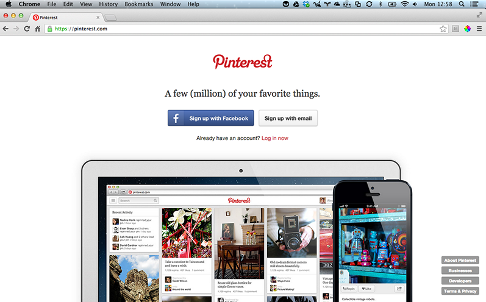

Create Online Boards

First Steps
- Go to Pinterest.
- Create your account with Facebook, Twitter, or your email address.
What is Pinterest?
Pinterest is an online pin board, a visual take on the social bookmarking site. Unlike other social bookmarking sites, such as Digg and StumbleUpon, content shared on Pinterest is driven entirely by visuals. In fact, you can’t share something on Pinterest unless an image is involved.
Features
- Pin images or videos to a board.
- Boards can be organised by topics.
- Follow other people to view what they pin.
- Collaborate with others on boards.
- Have private boards to share with others.
How to share
- Login to your account.
- Click on your name at the top-right of the screen.
- Select ‘Your Boards’ from the drop down menu.
- Click on ‘Create a board’ or "Create a secret board."
- Fill in the board details and click "Create Board."
- When the board has been created, select the board to view it.
- Click ‘Edit’ from the top of the board.
- Enter users or email addresses under the "Who can pin" section.
- Click "Invite."
- Save changes.